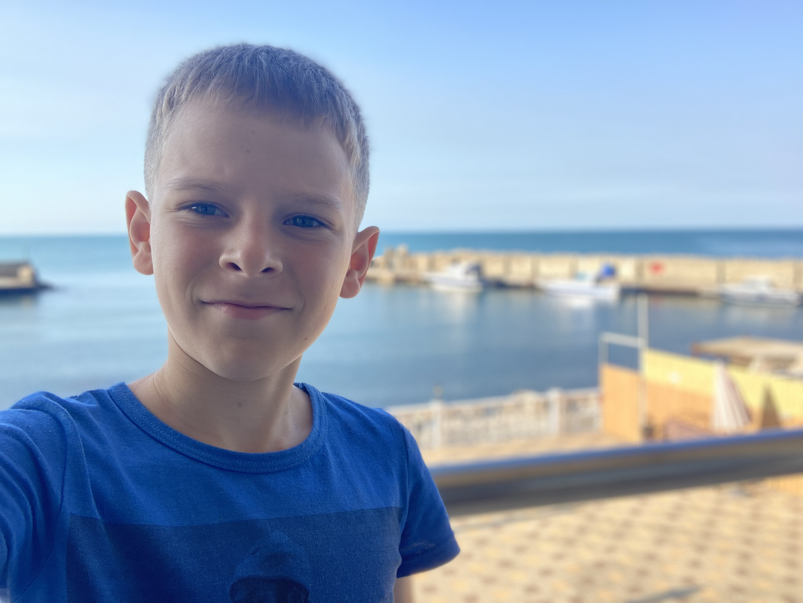

Блогер ВКонтакте • Владелец сервера Minecraft • Разработчик лаунчера AFGL
Привет! Меня зовут Andrix, и я тот самый человек, который делает контент по играм, создал крутой сервер AndrixFun вметсе с Denko и разрабатывает AndrixFun Games Launcher для своих проектов.
🎥 На своём канале в VK я делюсь новостями, гайдами и просто весёлыми моментами из мира Minecraft, WarZombies - Nexon(WZ-N). Уже 2 года занимаюсь любимым делом.
🛠️ Мой лаунчер AFGL создан специально для тех, кто хочет играть в мои игры без лишних заморочек — быстрая установка и всё нужное в одном месте.
⛏️ А ещё у меня есть сервер по Minecraft - AndrixFun, где собирается отличное комьюнити. Ниже ты можешь посмотреть его онлайн и присоединиться!
💬 Всегда на связи — пиши в соцсеть, предлагай идеи и просто общайся. Будем делать крутой контент вместе!
Версия: 1.12.2 • Выживание • Креатив • Дуэли • BedWars • SkyWars
Собственный лаунчер для моих игр: AFGL, это мои игры и не только мои.
Быстрая загрузка, встроенный каталог игр, ничего лишнего.
📌 Инструкция: скачай установщик, запусти и следуй указаниям. Подходит для Windows 10/11 (64-bit).
💬 Подробные новости о лаунчере смотри в разделе «Новости» выше.